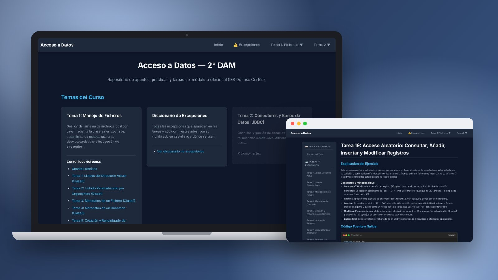
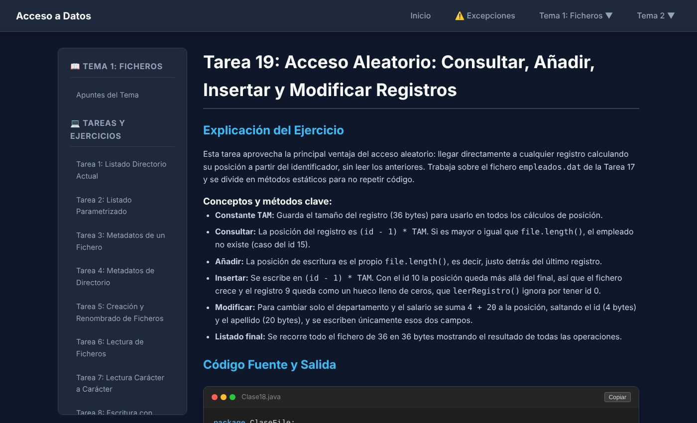
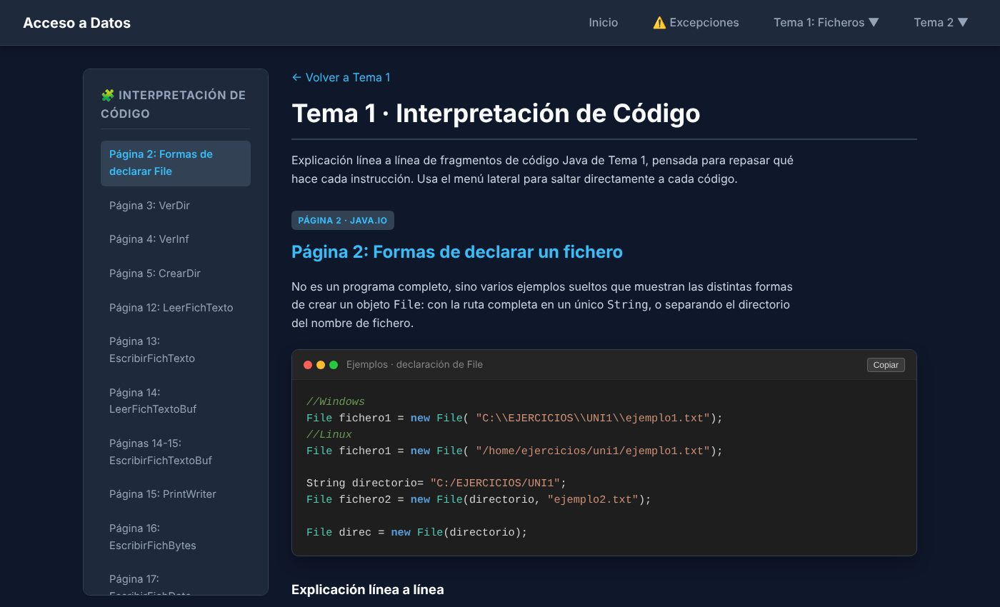

Apuntes de DAM
Mis cuadernos de código y apuntes del ciclo, ordenados para volver a ellos

Sobre el proyecto
Durante el ciclo he ido guardando en GitHub todo lo que hago en clase: teoría, ejercicios y prácticas con el código que funciona y la prueba de que funciona. Así puedo volver a cualquier tema sin rehacer la práctica, y sirve de guía a quien esté estudiando lo mismo.
Son tres repositorios que recorren el ciclo de principio a fin: el cuaderno de primero, los apuntes de Acceso a Datos y la web que los convierte en páginas navegables.
Los tres cuadernos
Codebase (1º DAM)
DOM con JavaScript, servidores Node.js + SQLite, p5.js, Python, retos de Linux y SQL y 14 cheatsheets
ADD-NDT
Ficheros, Streams, XML, JDBC + PostgreSQL, Hibernate/JPA, APIs REST con Spring Boot y MongoDB
Acceso a Datos (web)
19 tareas resueltas, código interpretado línea a línea y diccionario de excepciones
Características principales
Código + prueba
Cada práctica tiene el código completo, explicado paso a paso, con capturas de la ejecución.
Diccionario de excepciones
Cada excepción que aparece: si es checked o unchecked, cuándo salta y en qué tareas se usa.
Componentes reutilizables
El menú y las barras laterales de la web se escriben una vez y se inyectan con JavaScript.
Cheatsheets
Guías rápidas de Git, Linux, SSH, redes, JSON, async/await, MVC y ORM.
Web de Acceso a Datos


Stack Tecnológico
Backend & Datos
- Java, JDBC, Hibernate/JPA
- Spring Boot
- PostgreSQL, H2, MongoDB
Web & Scripts
- Node.js + Express
- JavaScript, p5.js
- Python
Herramientas
- Linux y SSH
- Markdown
- GitHub Pages